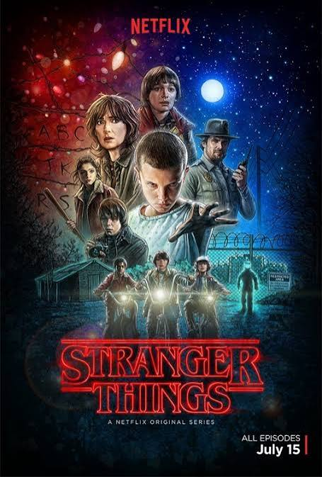
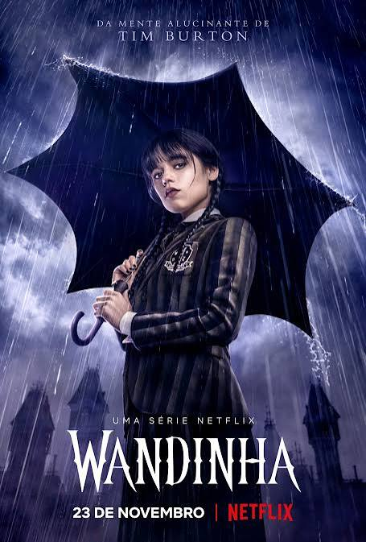
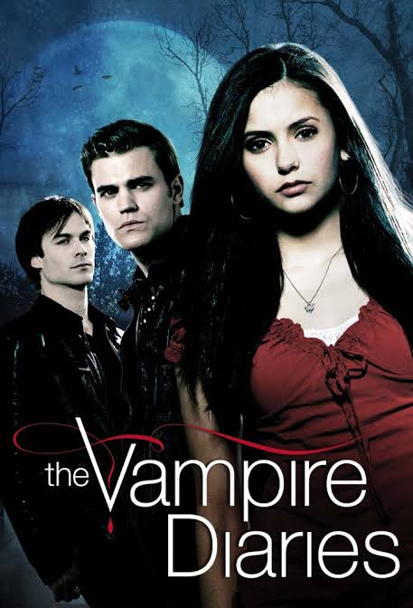
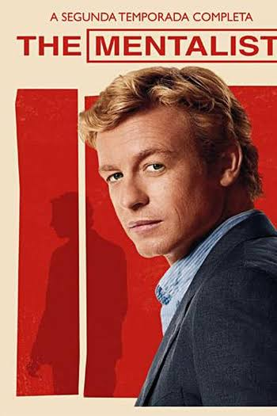

Mistérios, finais explicados e teorias sobre as maiores séries da TV e do streaming

Teoria SériesAnalisamos o mistério do dia 6 de novembro de 1983 e a conexão secreta entre Will Byers e Vecna.
Analisamos as pistas sobre os próximos personagens da Universidade Briar e as diferenças em relação aos livros.

Teoria SériesAnalisamos os suspeitos por trás das mensagens misteriosas e o poder oculto das visões da família Addams.
Analisamos como as visões do Dr. Shaun Murphy antecipam a solução dos casos e o simbolismo de sua jornada.

Teoria SériesAnalisamos a origem mágica das duplicatas Petrova e as pistas escondidas nos diários das famílias fundadoras.

Teoria SériesAnalisamos como Patrick Jane reduziu os suspeitos, o código "Tigre, Tigre" e os segredos da Associação Blake.